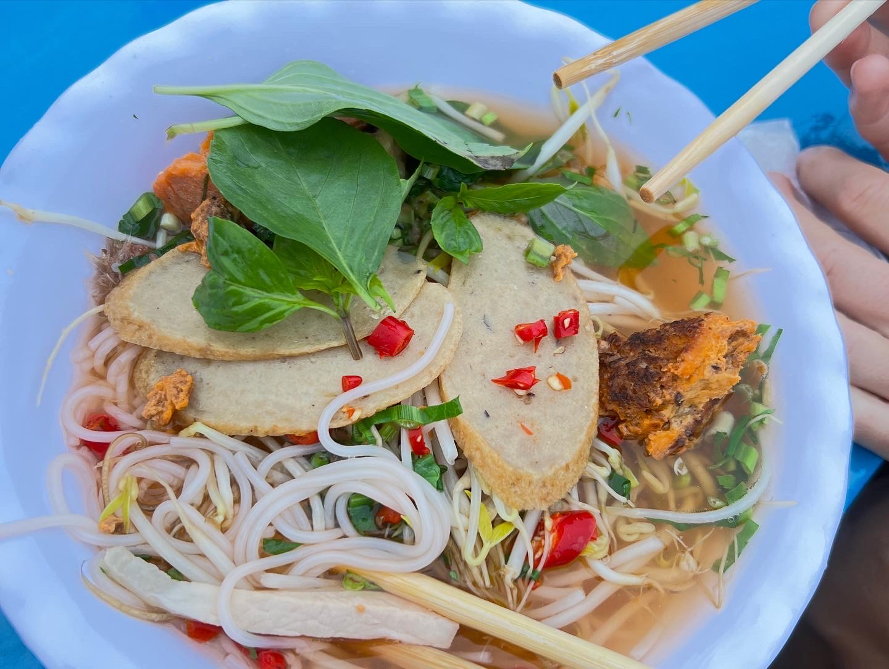
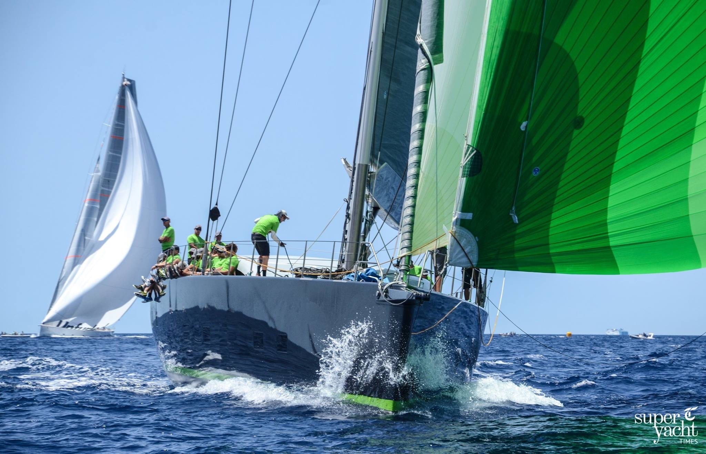
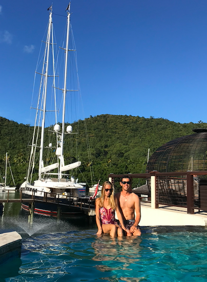

He blends into developing websites almost aswell as he does Cactii!
Summary
Hi Everybody. Complete developing rookie here, first time really doing any form of serious code, but keen to get involved and learn from the group.
So, a little about myself, the first and most important thing is i absolutely love to travel, which lead me to an exciting career as a Superyacht captain, sailing around the world and racing in professional regattas.
The other is a love of FOOOOD, as i travel the world i love to explore local delicasies and different cuisines! My favourite being that of Vietnam, The Bhan Bao are delicious, and theChili Pho has the perfect Kick!

Education
University Degree
BSc Sports & Exercise Science - University of Portsmouth 2012
Maritime Course
RYA Yachtmaster Offshore CoC - Cowes 2014
RYA Yachtmaster Ocean CoC - Palma de Mallorca 2018
MCA Officer of Watch less than 3000gt - Southampton 2021
Work Experience
Travel Agent - Travelbugs
Airlie Beach, Australia - 2013
Facilitating backpacker travel, tours and accommodation
Whitsundays
Great Barrier Reef
Fraser Island
Byron Bay
Noosa
Sydney, Brisbane & Cairns
Travel Agent - Nomads Travel
Wellington, New Zealand - 2014
Facilitating backpacker tours and accommodation
Auckland
Taupo
Wellington
Franz Josef
Wanaka
Queenstown
Milford Sound
Maritime Experience
Deckhand - SY WinWin
Palma de Mallorca - 2016
Deck maintenance, servicing winches blocks
Loro Piana Ragatta Sardinia 2016
Palma Superyacht Cup 2016
Maxi Worlds Regatta, Sardinia 2016
Cruising the Stromboli Islands

Chief Officer - SY Aquarius
FGN Worldwide - 2018
Cruising Greece
Perini Navi Cup Regatta, Sardinia 2018
Atlantic Crossing to Antigua
Cruising Caribbean leeward Islands
Antigua
Martinique
St Lucia
Guadeloup
Tobago Cays
St Barts Bucket Regatta, Caribbean 2019
Cruising Colombia and Panama Canal
Cruising Costa Rica & West Coast USA
Cruising Seattle & Vancouver
Alaska Expedition - Glaciers and Husky Sledding

Captain - SY Savannah
Saint Tropez - 2021
Cruising South Coast of France and Balearic Islands